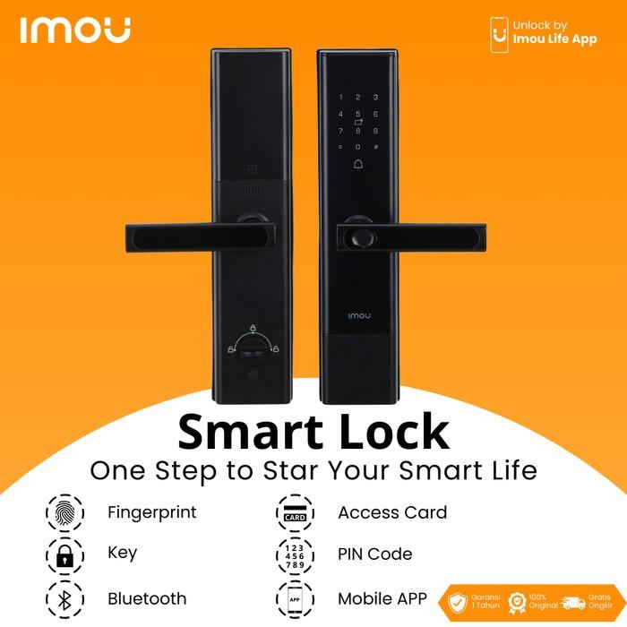

Portofolio Kami
Klik pada judul proyek untuk melihat detail pengerjaan oleh siswa TKJ.
Smart Lock Berbasis RFID

**Deskripsi:** Sistem keamanan cerdas menggunakan otentikasi RFID. Dirancang untuk meningkatkan keamanan pintu laboratorium dan ruang penyimpanan aset sekolah, dengan log akses tercatat di database lokal.
- Teknologi: Arduino Uno, Modul RFID RC522.
- Keahlian: Integrasi hardware-software & Desain sirkuit.
Monitor Kualitas Udara Kelas

**Deskripsi:** Perangkat IoT yang mengukur suhu, kelembaban, dan konsentrasi CO2 di ruang kelas. Data dikirimkan secara *realtime* ke dashboard berbasis web.
- Teknologi: ESP32, Sensor DHT11 & MQ-135.
- Keahlian: Pengembangan firmware, API, dan *data visualization*.
Lengan Robotik Edukasi

**Deskripsi:** Lengan robot 4-DOF yang dirancang sebagai alat bantu belajar mekanika dan pemrograman robotika. Dikontrol melalui *joystick* atau antarmuka web.
- Teknologi: Servo Motor MG996R, Kontroler Teensy/Arduino Mega.
- Keahlian: Perancangan mekanik, kontrol motor, dan pemrograman kinematika.